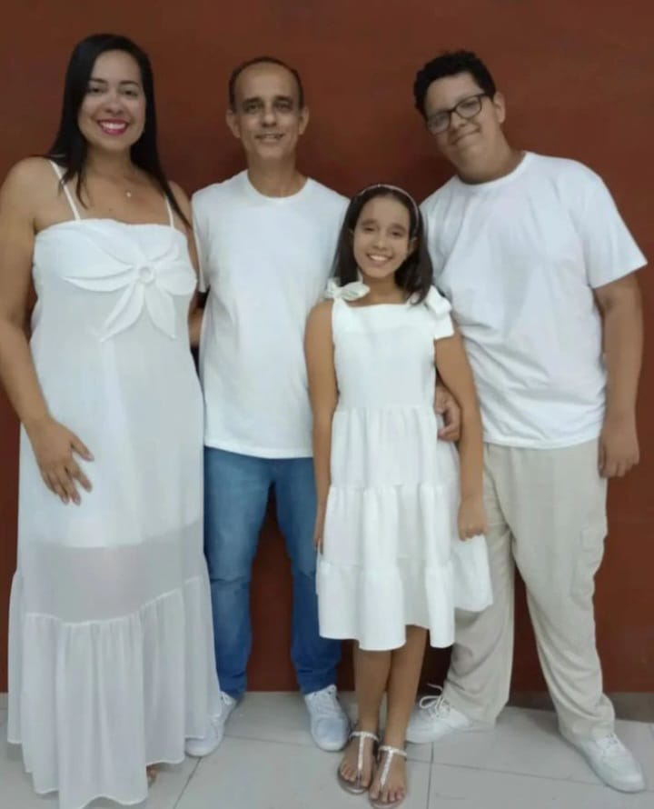
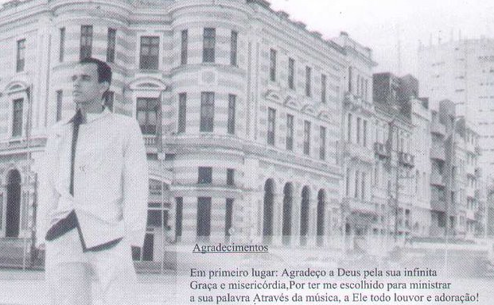
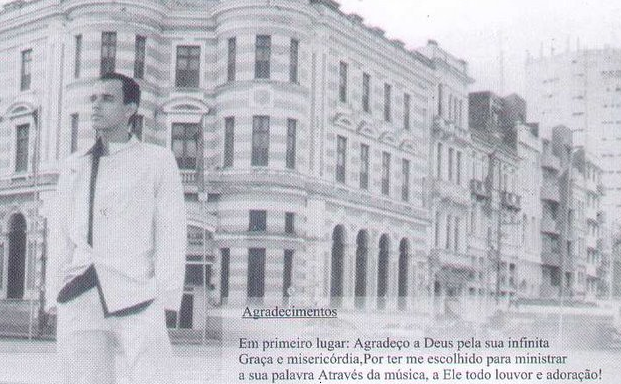

Home
Que bom ter você por aqui!

Recife, PE, Brazil
Olá! Sou Júnior Amancio e estou aqui juntamente com minha
esposa Juliana e nossos amados Filhos Levi e Sara para compartilhar
com vocês as maravilhas que o Senhor faz em nossas vidas. Somos
adoradores apaixonados que anda no sobrenatural, famintos e sedentos
por MAIS DE DEUS. A Palavra Amancio, vem do latim e significa
"Apaixonado" ou "aquele que ama", assim somos por Jesus! Para qualquer contato, clique na aba de contato e fale diretamente comigo.
Biografia
Biografia e Testemunho
Bem pessoal, gostaria de falar agora um pouco sobre o que Deus fez na
minha vida. Eu nasci em 13/outubro/1979 e duas parteiras freiras
fizeram meu parto, acontece que quando nasci, as parteiras freiras puseram os
olhos em mim e insistentemente pediram a minha mãe para que me dessem
a elas, mas como uma mulher temente a Deus e amorosa não
atendeu as mesmas, Bem, então começaram as lutas...
As parteiras esqueceram dentro de minha mãe na hora do parto uma
compressa, quando recebeu alta, em casa começou a sentir dores e foi
socorrida e se submeteu a uma cirurgia para tirar a compressa e ficou
internada durante 1 ano, com isto não a tive presente nesse tempo. Os anos foram se passando
e não conseguia me alimentar a não ser de papa, isto durou 6 anos e
meio, quando estava próximo de completar 7 anos de idade minha mãe já
preocupada, já havia me levado para vários médicos, psicologo e
dentista que disseram não haver problema algum em mim, inclusive o
psicologo falou que foi costume que ela pôs em mim, só que ela teve
experiência de criar 6 filhos, não tinha lógica de de por costume no
7º filho que era eu, restou esperar e ver se sobreviveria a esta
situação, até que minha mãe teve um sonho e neste sonho ela pôs um
prato de comida pra mim e me chamou para comer, ao sentar na mesa
aproximou-se de mim uma serpente enorme, ela me puxou da mesa e a
serpente começou a comer minha comida até deixar o prato vazio, ela
foi chamar o vizinho para matar a serpente que quando chegou a
serpente já havia fugido, despertou do sono e começou a entender que
minha situação era espiritual, logo se dirigiu a Igreja para um culto
de oração e orou com os irmãos por mim, após as orações na mesma
semana, lembro como se fosse hoje, percebi o cheiro da comida pela
primeira vez e na porta da cozinha olhando para ela afim de
almoçar, ela olhou para mim e disse que estava pondo o meu eu
disse que sim, que eu queria, ela disse que estava falando sério e eu
disse o mesmo, então ela o fez e me chamou para almoçar. Irmãos e
irmãs, neste dia comecei a comer desesperadamente quase com 7 anos de idade, ela quis me ensinar como pegar na colher, mas eu não quis saber disso,
soltei a colher e fui com a mão no prato no maior desespero, quando
acabou eu disse: quero mais, quero mais, repeti 2 pratos e grande foi
a festa na cozinha com a família neste dia. A parti daí, hoje como de
tudo e estou bem para glória de Deus, o inimigo foi derrotado mais uma
vez e tenta de várias formas impedir-me de conquistar o que Deus tem
pra mim, mas é debalde, apareceu a mim em sonhos com formas de
serpente, até como anjo de luz afim de me enganar apareceu em sonho,
mas em Cristo Jesus somos mais que vencedores. Hoje sou músico,
Levita, ministro de Louvor e adoração na Igreja Bola de Neve, cantor e compositor, sou diacono, Líder e maestro do Coral Bola Singers e tenho uma
linda esposa Juliana e lindos filhos Levi e Sara, sou servo do Deus
altíssimo e Deus me confiou vários talentos musicais para exercer na
sua obra para glória de Deus.
Click aqui para continuar
Discografia
Ouça e faça o Download
Meu Refúgio

clique aqui para ver mais fotos
 

Este é o primeiro Álbum Meu refúgio gravado
em 2002.
Click aqui para fazer o Download do Álbum Meu Refúgio
Os que esperam
Meu Refúgio
Não posso me esquecer
Cântico de Guerra
Poder Espiritual
Consagração
Figueira
Eu hei de O abraçar
Bendito
Eu vou louvar
Coração Contrito
Este é o segundo Álbum Coração Contrito gravado ao vivo em 2005, junto ao Ministério Comunhão e Fogo.
Fiel e Verdadeiro
Tabernáculo
Espontâneo Tabernáculo
Inesgotável
Te Amo demais
Coração contrito
Meu coração
Comunhão
Consagração
Músicas - Videos - Pregações
Clique aqui para Assistir
Contato / Agenda
Entre em contato conosco.